如何获取用户游戏数据
How to get user game data
目录 | Index
我的箱子 | My Box
如果你使用我的箱子功能打开你的游戏数据，你将会获得如下功能。
If you use the My Box feature to open your game data, you will get the following features.
- 将你队伍变成链接
Turn your team into a link.

- 绑定箱子后，搜索时可以显示箱子内的角色个数。
With bind the box, you can display the number of cards in the box when searching.
显示规则是 ×相同ID(进化链其他)
The number rule is ×identical ID(other in evolutionary tree)

- 把你的游戏数据发给大佬，让他帮你组队。这样不会有帐号泄露风险。
Send your data to an expert and ask him to help team up so there is no risk of your account being stolen.
你保存的数据全部存于浏览器的本地 IndexedDB 内，不会被上传到服务器，因此更换浏览器就需要重新打开数据。
All of the data you save is stored in your browser's local IndexedDB and will not be uploaded to the server, so changing your browser will require you to reopen the data.
安卓用户 | Android User
无 Root 设备用户 | No Root device user
你需要在在电脑上安装一个能运行智龙迷城的安卓模拟器，比如 夜神模拟器、逍遥安卓、蓝叠模拟器。后面以夜神模拟器国际版进行讲解。（与夜神没有任何赞助关系。国际版自带谷歌套装，也能改中文）
You'll need to install an Android simulator on your PC that runs P&D, such as NoxPlayer, MEmu Play,
BlueStacks. I'll use NoxPlayer later to explain. (There is no sponsorship
relationship with NOX.)
自行安装智龙迷城游戏并登录你的游戏账号。
Install P&D and log in to your game account.
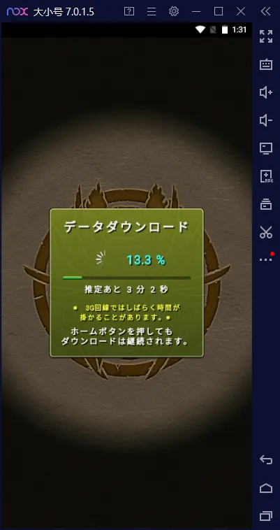
如果闪退，打开多开器，添加一个能运行智龙迷城的版本，目前有 安卓7 和 安卓7-64位。
If P&D can't be opened, run the Multi-Drive and add a version that runs P&D, currently available in
Android 7 and Android 7-64 bits.
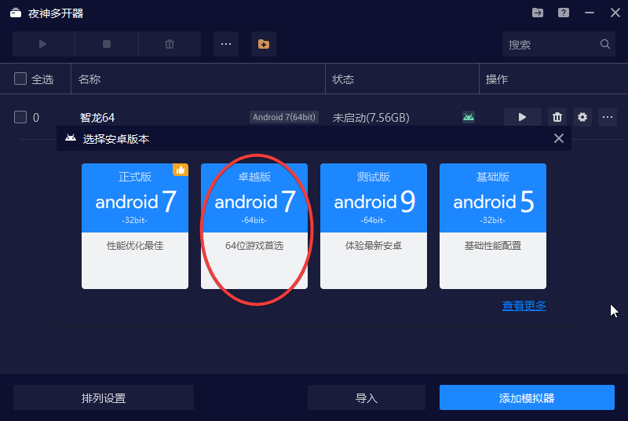
然后你可以选择在安卓内使用 APP 和电脑上用代理软件两种方式抓包。
You can then choose to sniffer in both use the APP within Android and proxy software on your PC.
使用 HttpCanary APP | Use HttpCanary APP
请自行从网上搜索并安装 HttpCanary（已被谷歌商店下架）。
Please search the web and install HttpCanary
yourself (It's blocked by google store).
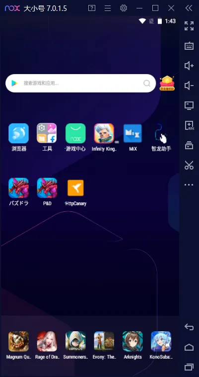
打开模拟器的 Root，并重启。
Open the simulator's root and restart.
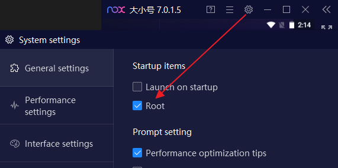
运行 HttpCanary，按照提示配置本地 VPN 和导入证书（系统可能要求设置密码）。
Run HttpCanary, follow the prompts to configure the local VPN and import certificates (The system may require a
password).
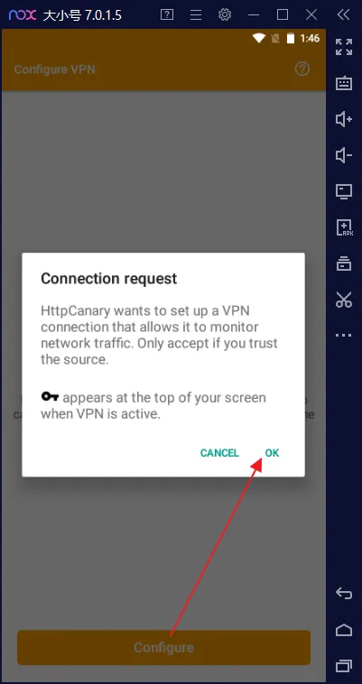
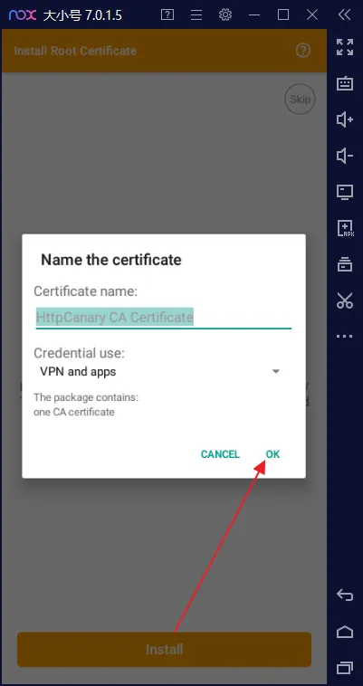
授予 Root 权限，将证书移至系统目录。安卓 7 以上必须这样做才能嗅探到 https 的流量。
Grant Root permission to move the certificates to the system directory. Android 7 or above must do this to sniff
out https traffic.
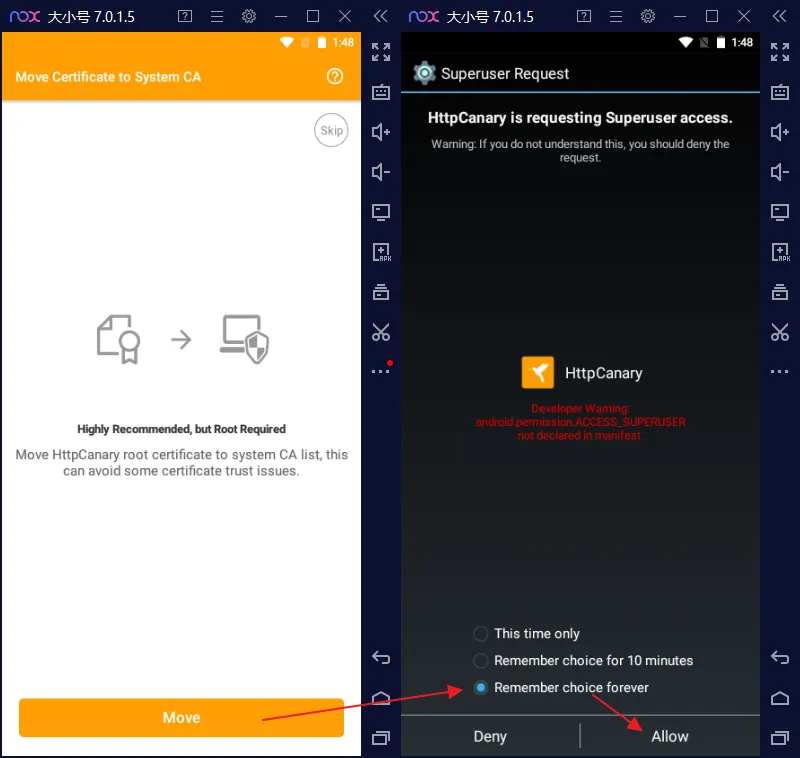
可以根据需要关闭 Root 了（日服客户端需要关闭 Root 才能运行）。
Root can be closed as needed. (The Japanese version client needs to close Root operation.)
HttpCanary 菜单内添加智龙迷城为目标应用，可减少其他流量的干扰。
Add P&D to the target app in HttpCanary menu, to reduce interference with other traffic.
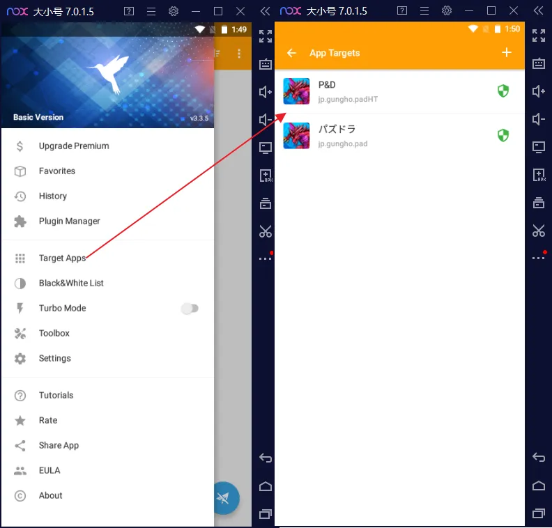
回到首页，点击主按钮开始嗅探流量。
Back on the home page, click the main button to start sniffing traffic.
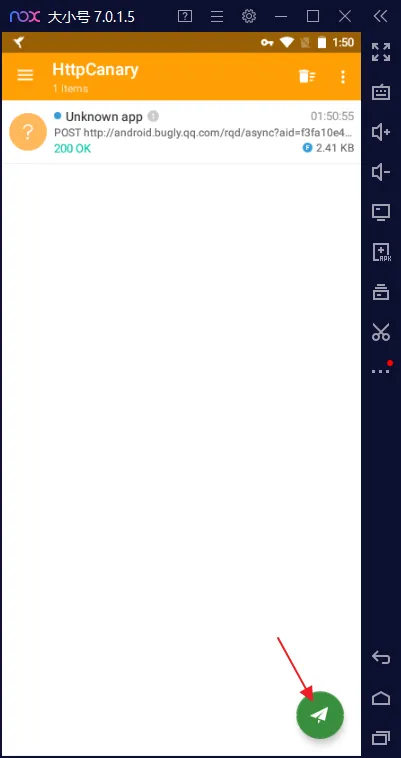
运行智龙迷城游戏，直到登陆成功。
Run the P&D game until log in successfully.

返回
HttpCanary，找到padsv.gungho.jp/api.php?action=get_player_data网络请求。（一般紧跟api.php?action=login）
Go back to HttpCanary to find the network request padsv.gungho.jp/api.php?action=get_player_data.
(Generally followed by api.php?action=login)
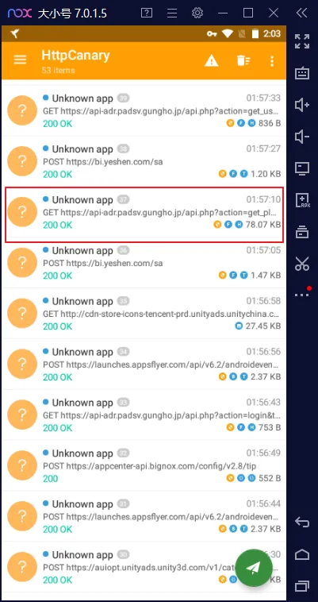
进入该条目，保存响应体。
Go to the entry and Save Response Body.
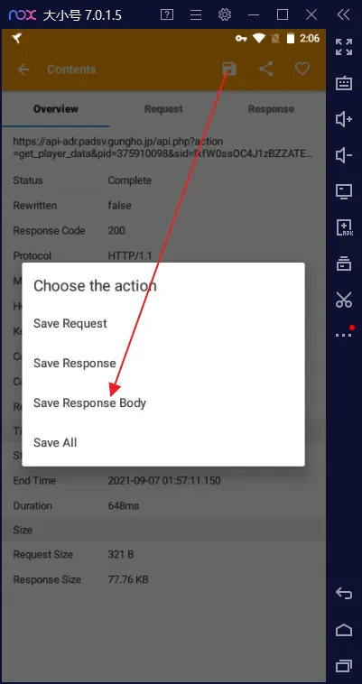
使用文件管理器找到手机储存/HttpCanary/download/[你保存的名称]/response_body.html，这个就是你的游戏数据。
Use the file manager to find
[Phone Storage]/HttpCanary/download/[The name you saved]/response_body.html, and this is your game
data.
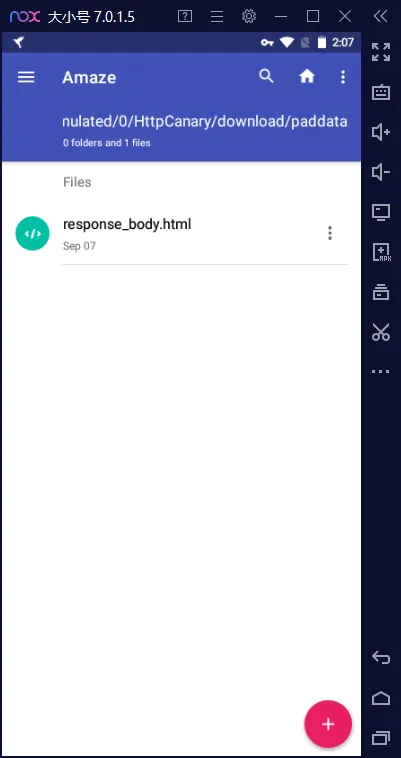
打开模拟器的电脑共享目录。
Open the simulator's PC shared folder.
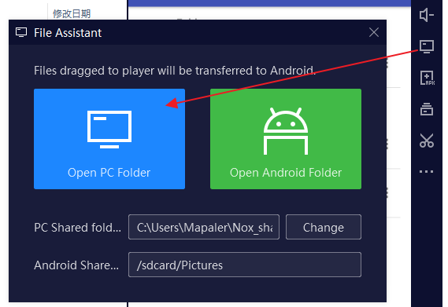
将response_body.html复制到手机储存/Download文件夹，即可在电脑上看到文件。
Copy response_body.html to [Phone Storage]/Download folder to see files on your
PC.
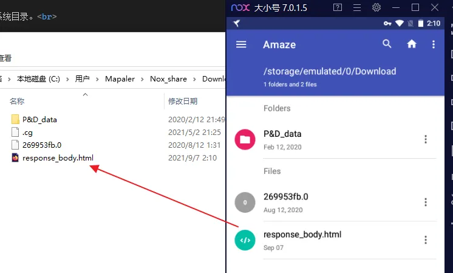
到我的箱子功能里打开即可。
Open my box function and open it.
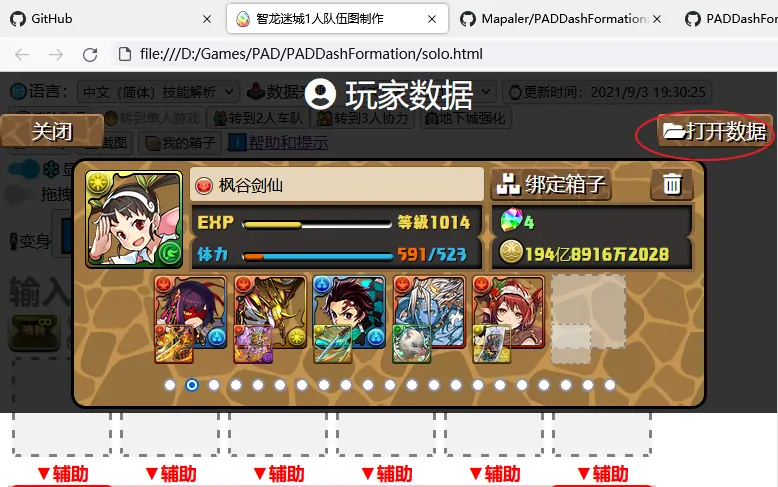
每次获取新的数据，重复 启动 HttpCanary > 登录游戏 > 保存响应体 的步骤。
Each time you get new data, repeat the steps to Start httpCanary > Log in to the game > Save Response Body.
如果希望不要每次都重新使用 SNS 登录游戏，可以查看如何多设备登录。
If you want to not reuse the SNS login game every time, you can see How to login
with multiple devices.
在电脑上使用 Fidder | Use Fidder on PC
在电脑上安装Fiddler Classic
Install Fiddler Classic on your
PC.
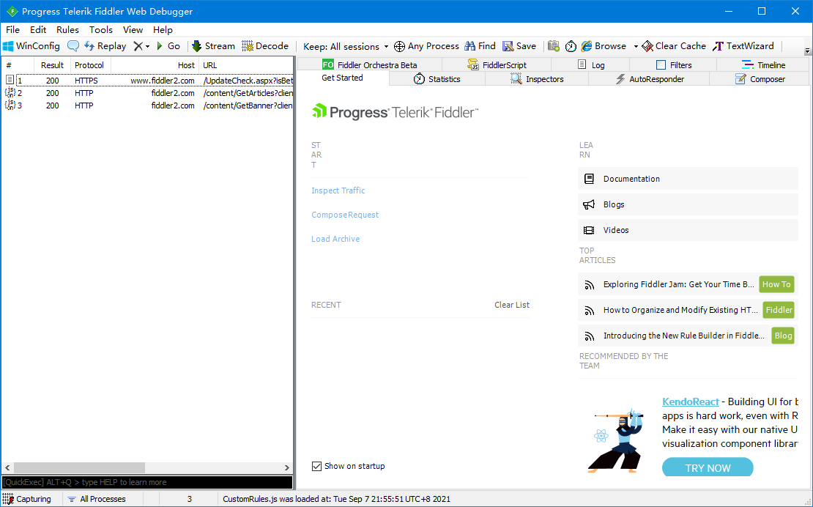
为了使模拟器能连接 Fidder，打开允许远程计算机连接的功能。
同时为避免抓到其他无用的流量，推荐你关闭自动设为系统代理的选项并重启 Fidder。
In order for the simulator to connect to Fidder, turn on the feature that Allow remote computers to
connect.
And for avoid catching unwanted traffic, it is recommended that turn off the option Act
as the system proxy on startup and restart the Fidder.
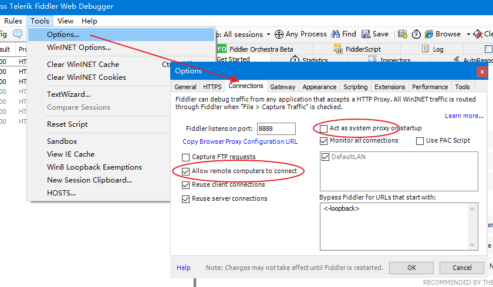
打开 HTTPS 解密，警告询问你是否添加证书到电脑可以选择否，因为我们不需要解密电脑上的流量。
Turn on decrypt HTTPS traffic. The warning asks if you want to add the certificate to your PC and you
can choose No because we don't need to decrypt traffic from your PC.
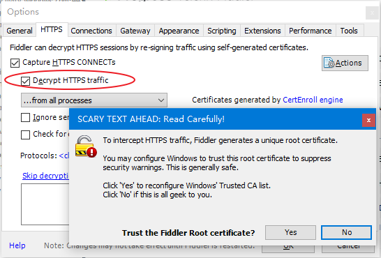
将根证书导出到桌面，之后你将会在桌面上看到一个FiddlerRoot.cer文件。
Export the root certificate to the desktop. You will then see a file FiddlerRoot.cer on your
desktop.
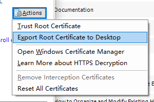
在桌面按住 Shift 点击鼠标右键，在此打开 PowerShell。
Press and hold Shift on the desktop and right-click to open PowerShell here.
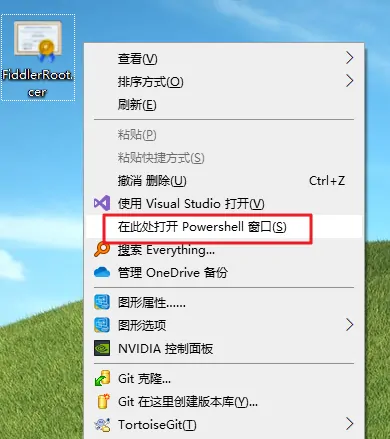
在 PowerShell 中，执行以下代码，之后你将会在桌面上，见到一个269953fb.0文件。
In PowerShell, execute the following codes, and then you'll see a 269953fb.0 file on your
desktop.
# get the cer full path
$cert_path=Resolve-Path "FiddlerRoot.cer";
# create a cert object
$cert=New-Object System.Security.Cryptography.X509Certificates.X509Certificate2($cert_path);
# create a md5 object
$md5 = New-Object -TypeName System.Security.Cryptography.MD5CryptoServiceProvider;
# to openssl hash "-subject_hash_old"
# get the cert SubjectName md5 hash
$md5bin = $md5.ComputeHash($cert.SubjectName.RawData);
# convert to this format bytes
$hashnum = ([long]$md5bin[0] -bor ([long]$md5bin[1] -shl 8) -bor ([long]$md5bin[2] -shl 16) -bor ([long]$md5bin[3] -shl 24)) -band 0xffffffff;
# convert bytes to file name
$pem_name = [Convert]::ToString($hashnum, 16).padleft(8,"0")+".0";
# create PEM format content
$str=New-Object System.Text.StringBuilder("");
$str.AppendLine("-----BEGIN CERTIFICATE-----");
$str.AppendLine([Convert]::ToBase64String($cert.RawData, [Base64FormattingOptions]::InsertLineBreaks));
$str.AppendLine("-----END CERTIFICATE-----");
# save the file
$str.ToString() | Out-File -Encoding ascii -FilePath $pem_name
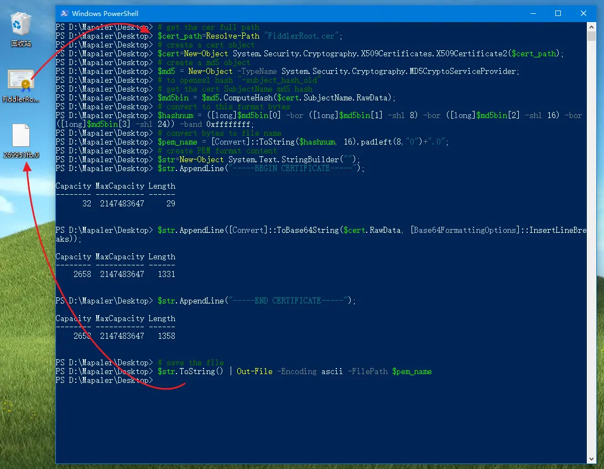
打开模拟器的 Root，并重启。
Open the simulator's root and restart.
使用共享文件夹，将269953fb.0转移到模拟器。
Use the shared folder to transfer 269953fb.0 to the simulator.
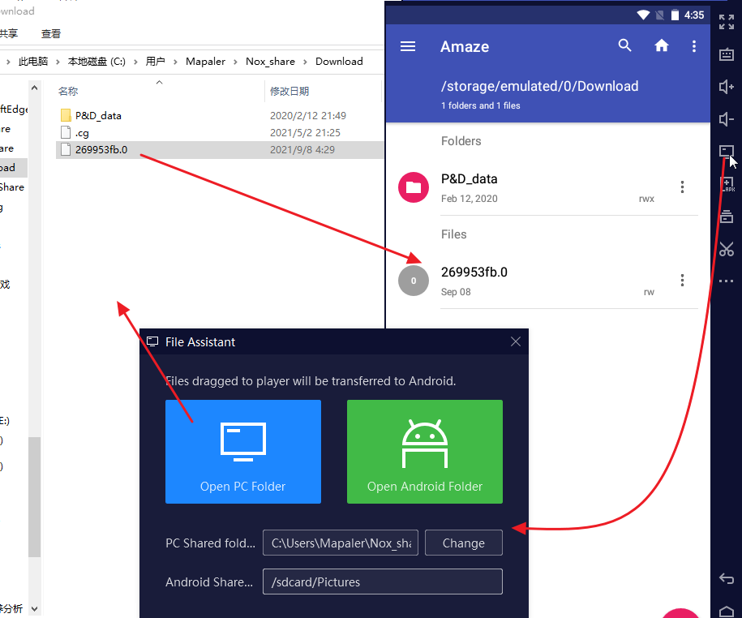
将269953fb.0复制到/system/etc/security/cacerts文件夹内。
Copy the 269953fb.0 to the /system/etc/security/cacerts folder.
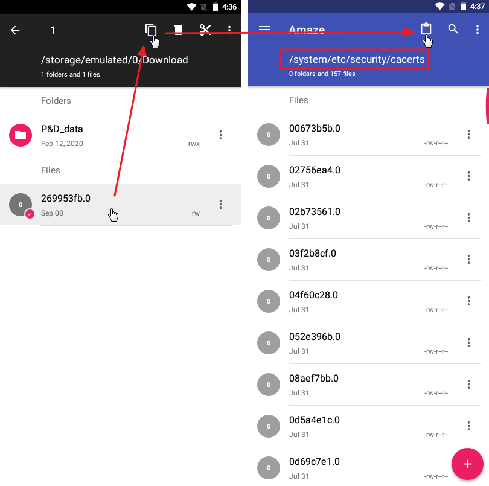
打开269953fb.0文件属性，设置权限为-rw-r--r--(644)。
Open 269953fb.0 file properties and set permissions to -rw-r--r--(644)
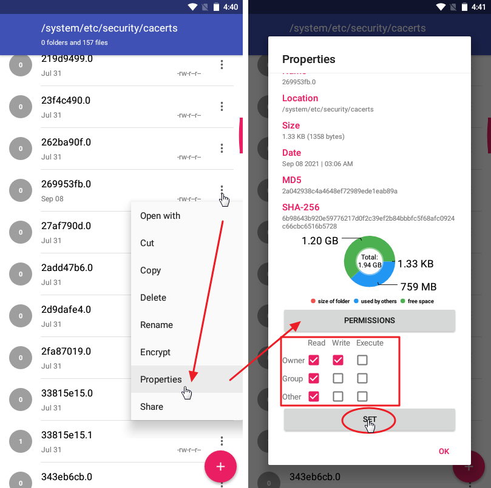
重启模拟器，以使证书被系统读取。
Restart the simulator so that the certificate is read by the system.
可以根据需要关闭 Root 了（日服客户端需要关闭 Root 才能运行）。
Root can be closed as needed. (The Japanese version client needs to close Root operation.)
修改模拟器内 WiFi 的代理，改为手动模式，主机名为电脑的网卡 IP，端口号为 8888。
Modify the proxy of WiFi in the simulator to manual mode, the host name is the computer's network card IP, port
number 8888.
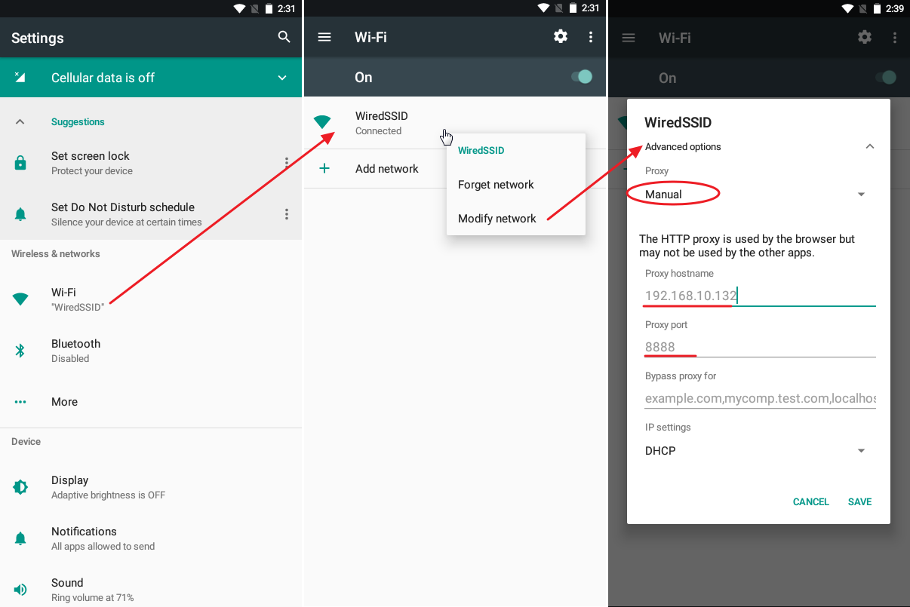
你可以在电脑网卡属性里找到当前 IP。
You can find the current IP in the PC network card properties.
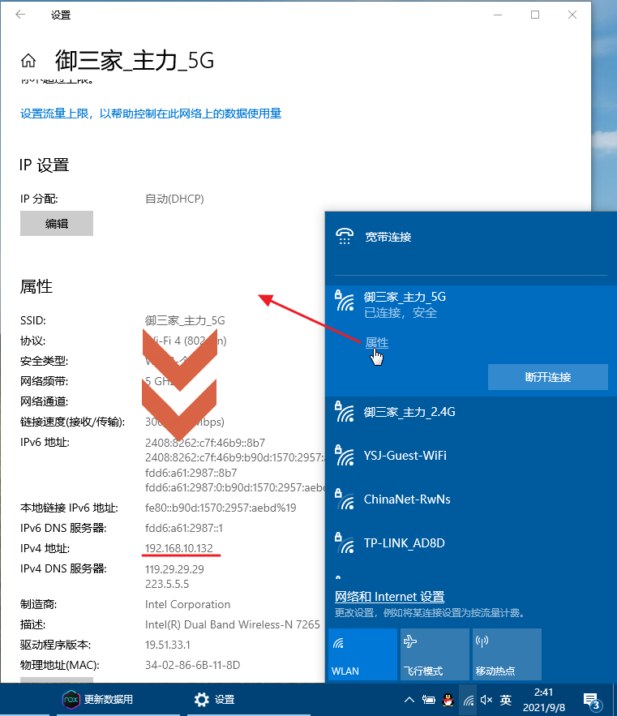
打开 Fiddler 的自动解码和流式传输。
Turn on Fiddler's auto Decode and Stream.
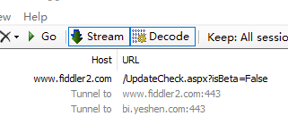
运行智龙迷城游戏，直到登陆成功。
Run the P&D game until log in successfully.
然后在 Fidder
内找到padsv.gungho.jp/api.php?action=get_player_data网络请求。（一般紧跟api.php?action=login）
Go back to Fidder to find the network request padsv.gungho.jp/api.php?action=get_player_data.
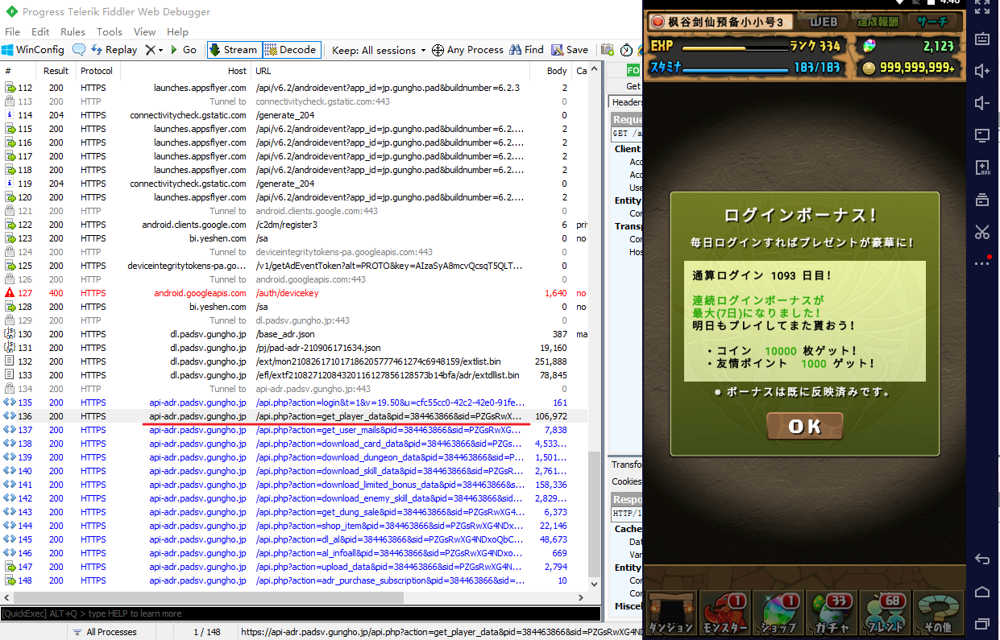
在右键菜单内选择保存响应体。
Select Save Response Body within the right-click menu.
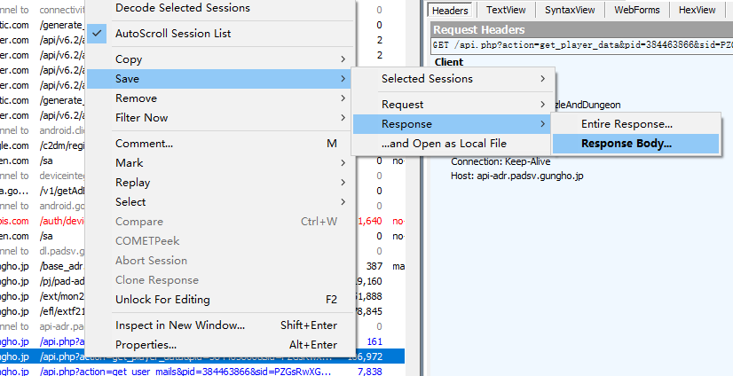
到我的箱子功能里打开即可。
Open my box function and open it.
每次获取新的数据，重复 开启 Fidder > 模拟器内登录游戏 > 保存响应体 的步骤。
Each time you get new data, repeat the steps to Start Fidder > Log in to the game in the simulator > Save
Response Body.
如果希望不要每次都重新使用 SNS 登录游戏，可以查看如何多设备登录。
If you want to not reuse the SNS login game every time, you can see How to login
with multiple devices.
自动保存响应体 | Auto Save Response Body
Fidder 可以使用脚本自动保存响应体。
Fidder can use scripts to automatically save Response Body.
在 Fidder 脚本中，快速跳转到OnBeforeResponse。
In the Fidder Script, quickly jump to the OnBeforeResponse
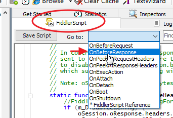
将以下代码插入OnBeforeResponse代码括号内，并保存。
Insert the following code into the parenthesis of the OnBeforeResponse code and save it.
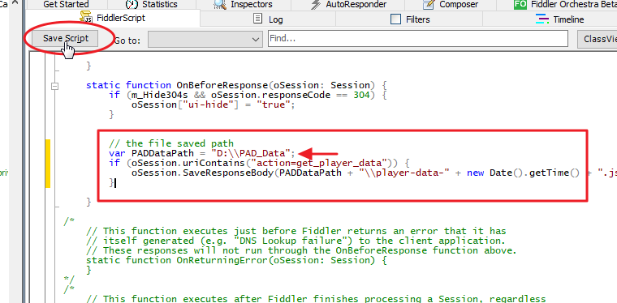
记得将第一行的文件路径修搞到你自己的文件夹，因为是转义符，右斜杠需要写两次。
Remember to fix the first line of file paths to your own folder, because it's an escape character, and the right
slash needs to be written twice.
// the file saved path
var PADDataPath = "D:\\PAD_Data";
if (oSession.uriContains("action=get_player_data")) {
oSession.SaveResponseBody(PADDataPath + "\\player-data-" + new Date().getTime() + ".json");
}
如何多设备登录 | How to login with multiple devices
智龙迷城的账号唯一识别码(GUID)储存于/data/data/jp.gungho.pad/files/data048.bin中。
The unique account number (GUID) of P&D is stored in the
/data/data/jp.gungho.pad/files/data048.bin.
只需要复制这个文件到另一台设备上的相同路径，就不需要 SNS 引继，可以随时切换设备登录账号。
Simply copy this file to the same path on another device, you don't need to sign in by Social Media Linking, you
can switch device logins at any time.
用处 | use:
- 手机、平板、模拟器内都可以登录同一个账号，方便更换游玩设备。
Smart phones, tablets, emulators can log in to the same account, convenient to change play equipment.
- 日服和港台服是同一个服务器，所以日本客户端和港台客户端可以同时登陆同一个账号。但是他们的魔法石商店不同，礼包可以分别买一次。
Japanese country client and China Hong Kong & Taiwan region client are the same backend server, so Jp
clients and HT clients can log in to the same account. But their Magic Stone Shop are different, so gift
bags can be bought twice.
Root 用户可以直接访问这个文件，复制到另一台设备，并覆盖相同文件即可。
Root users can access the file directly, copy to another device, and overwrite the same file.
无 Root 用户目前可以使用 Android 调试桥 (adb) 导出
data048.bin，请看接下来的教学。
No-Root users can currently export data048.bin using Android Debug Bridge (adb), see the next
lesson.
如要在通过 USB 连接的设备上使用 adb，您必须在设备的系统设置中启用 USB 调试（位于开发者选项下）。如需使用 WLAN 连接到设备来使用 adb，请参阅通过 WLAN 连接到设备。
To use adb with a device connected over USB, you must enable
USB debugging in the device system settings, under
Developer options. To use adb with a device connected over Wi-Fi, see
Connect to a device over Wi-Fi.
将你的手机用USB线缆连接到电脑上。
Connect your phone to your computer with a USB cable.

打开 USB 调试。由于不同手机“开发者选项”所在的位置或名称可能有所不同，请您自行搜索您的手机型号的打开方式。
Turn on USB debugging. On different devices, the Developer options screen might be located or named
differently, please search for your phone.
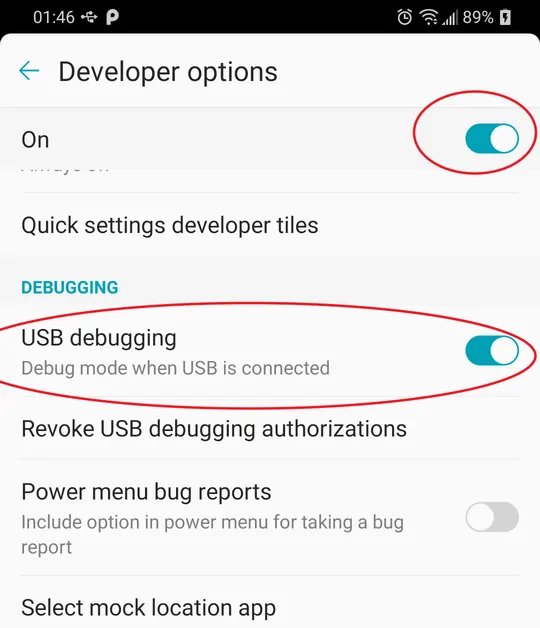
如果你在设备管理器内能看到 ADB interface 驱动，那么你很可能可以使用 adb 工具。
否则你需要安装手机设备制造商的 USB 驱动程序或者尝试通用 ADB 驱动。
If you can see the ADB interface driver in Device Manager, you're likely to use the adb tool.
Otherwise you'll need to install OEM USB drivers
or try Universal ADB Drivers.
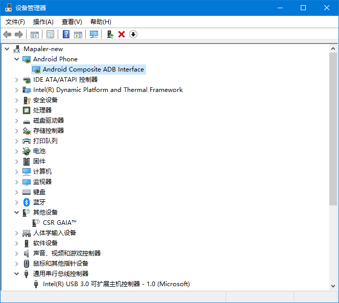
下载 SDK Platform Tools，adb 工具在里面。
Download SDK Platform Tools, the adb
tool in it.
您可以通过从 platform-tools 目录执行 adb devices 验证设备是否已连接。如果已连接，您将看到设备名称以“设备”形式列出。
You can verify that your device is connected by executing adb devices from the
platform-tools directory.
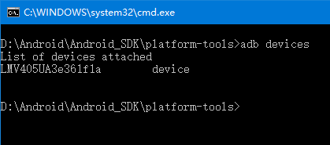
解锁手机，执行以下代码对游戏数据进行备份。在手机上弹出的确认窗口中输入任意密码并记住或留空。
Unlock your phone, perform the following code to back up game data. Enter any password and remember or leave it
blank in the confirmation window that pops up on your phone.
adb backup <包名 | Package Name> -f pad.ab
包名 | Package Name:
- パズル＆ドラゴンズ:
jp.gungho.pad
- 龍族拼圖:
jp.gungho.padHT
- Puzzle & Dragons:
jp.gungho.padEN
- 퍼즐앤드래곤:
jp.gungho.padKO
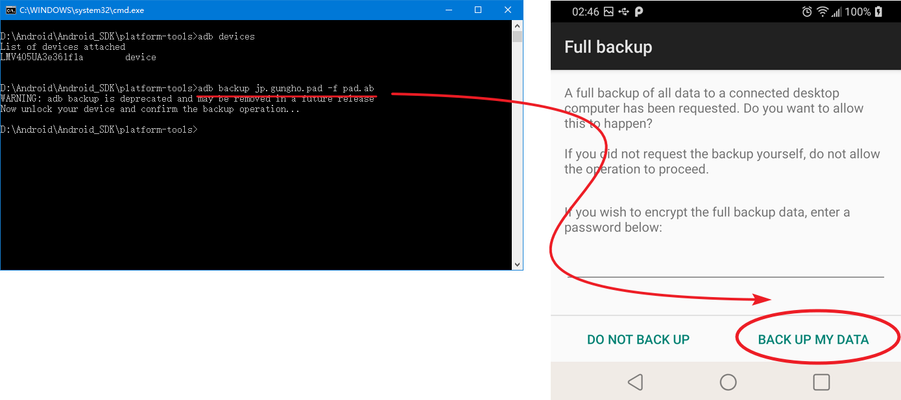
你需要使用Android backup
extractor来解密 ab 文件。同时它是用 Java 编写的，你需要安装 Java 11 运行时。
You need to use Android backup
extractor to decrypt ab files. And it's written in Java, so you need to install the Java 11 runtime.
执行以下代码进行解密。
perform the following code to decrypt.
java -jar abe.jar unpack pad.ab pad.tar [备份密码 | backup password]
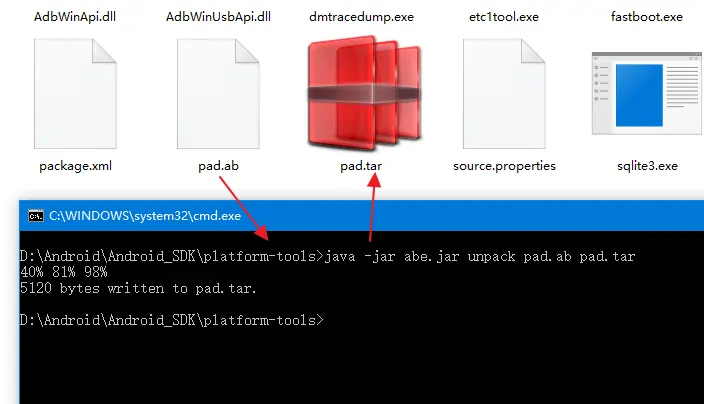
打开这个 pad.tar 压缩包你将会看到data048.bin
Open this pad.tar package and you'll see the data048.bin
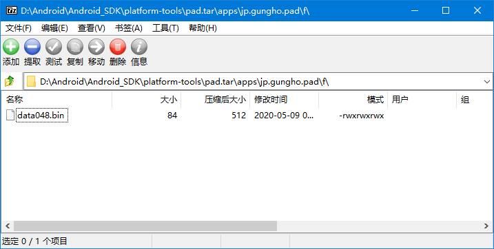
打开模拟器的 Root，并重启。
Open the simulator's root and restart.
使用data048.bin覆盖模拟器内的/data/data/jp.gungho.pad/files/data048.bin，并删除data048.bin和mons文件夹以外的其他文件。
Use data048.bin override the /data/data/jp.gungho.pad/files/data048.bin in the
emulator, and delete files other than data048.bin and mons folders.
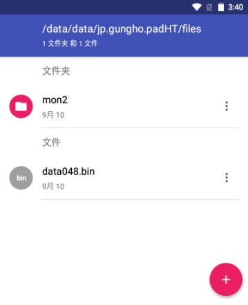
打开游戏，然后你就可以在手机和模拟器登录同一个帐号了。
Open the game. Then you can log in to the same account on your phone and emulator.
注意 | note:
- 后登录的会使先登录的下线，在地下城内游玩的时候不要登录另一个设备。你可以回到标题画面，重新登录就可以回到这个设备。
The next login will bring the first login offline, don't login to another device while playing in the dungeon. You can go back to the title screen and login back to the device.
- 使用谷歌引继或 SNS 引继会导致服务器重新生成唯一识别码(GUID)，旧有的
data048.bin失效。
Sign-in by Google Account or Social Media Linking causes the server to regenerate a unique account number
(GUID), and invalidate the old data048.bin.
- 对于另一台没有 Root 的手机，你可以使用
adb restore pad.ab来导入data048.bin。
For another phone that doesn't have Root, you can import data048.bin using the
adb restore pad.ab.
Root 设备用户 | Root device user
推荐导出 data048.bin 并在安卓模拟器上获取用户数据。
It is recommended to export data048.bin and get user data on the Android emulator.
如果希望只用这一台设备，请参考HttpCanary方法。
If you want to use only this device, refer to the HttpCanary method.
苹果用户 | iOS User
我没有苹果设备，无法研究iOS。可以临时使用 Facebook SNS 跨平台到安卓模拟器登录，进行数据导出。
I don't have an Apple device so I can't study iOS. You can temporarily across platforms sign in to Android Simulator by Facebook Social Media Linking.
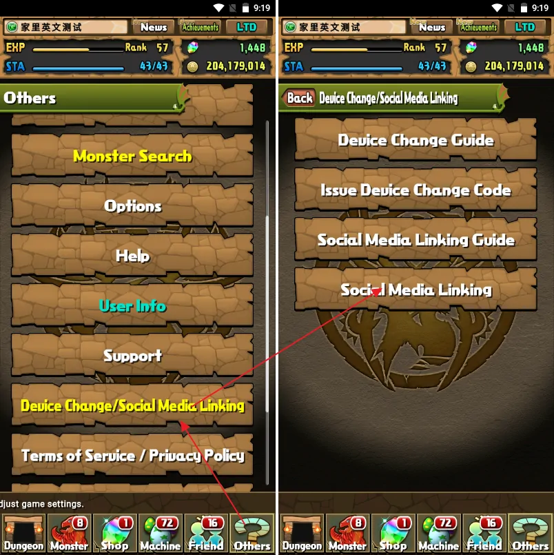